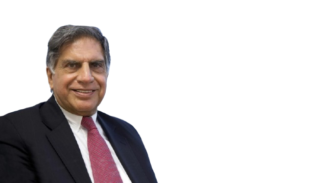

I’ve led the Tata Group to global success, driven by innovation, ethics, and a vision for a better world. Beyond business, I believe in giving back through philanthropy and supporting young entrepreneurs.
"Hello, I’m Ratan Tata.